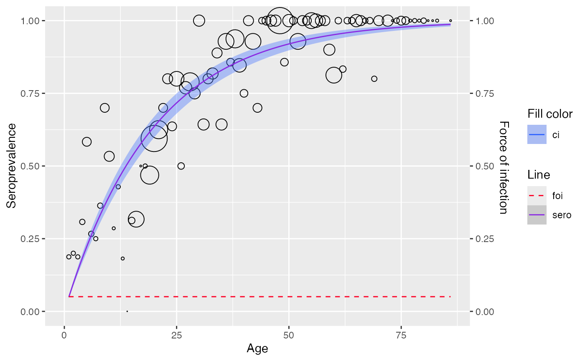
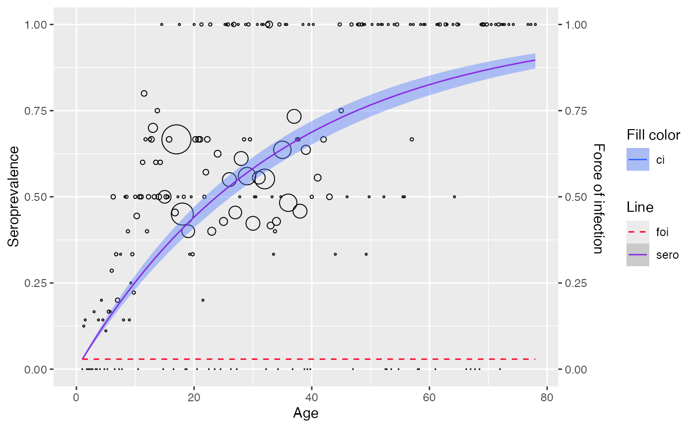

library(serosv)
library(dplyr)
#> Warning: package 'dplyr' was built under R version 4.3.1
#>
#> Attaching package: 'dplyr'
#> The following objects are masked from 'package:stats':
#>
#> filter, lag
#> The following objects are masked from 'package:base':
#>
#> intersect, setdiff, setequal, union
library(magrittr)Input data format
Most *_model() functions in serosv require
data argument as the input data to be fitted.
The package can handle both linelisting and aggregated data, and it infers the format from the column names of the input data frame. This means that input data is expected to follow a specific format.
For linelisting data: data must have age,
pos and tot columns, where
ageis the age vectorposis the vector of counts of sero positives of that age grouptotis the vector is the total population of that age group
For aggregated data: data must have age,
status columns, where
ageis the age vector of individualsstatusis the vector for the sero positivity of that individual
Example: Fitting linelisting and aggregated data
using polynomial_model()
linelisting <- parvob19_fi_1997_1998[order(parvob19_fi_1997_1998$age), ]
aggregated <- hav_bg_1964
# View the 2 different data format
head(linelisting)
#> age seropositive year gender parvouml
#> 1 1 0 2001 m 8
#> 2 1 0 2001 m 7
#> 3 1 0 2001 m 6
#> 406 1 0 2001 f 11
#> 407 1 0 2001 f 7
#> 408 1 0 2001 f 5
head(aggregated)
#> age pos tot
#> 1 1 3 16
#> 2 2 3 15
#> 3 3 3 16
#> 4 4 4 13
#> 5 5 7 12
#> 6 6 4 15
# fit with aggregated data
model1 <- polynomial_model(aggregated, type = "Muench")
plot(model1)
# fit with linelisting data
model2 <- linelisting %>%
rename(status = seropositive) %>%
polynomial_model(type = "Muench")
plot(model2)Data transformation
serosv also offers function
transform_data() to convert from linelisting to aggregated
data. For more information, refer to Data transformation
transform_data(
linelisting$age,
linelisting$seropositive,
heterogeneity_col = "age") %>%
polynomial_model(type = "Muench") %>%
plot()